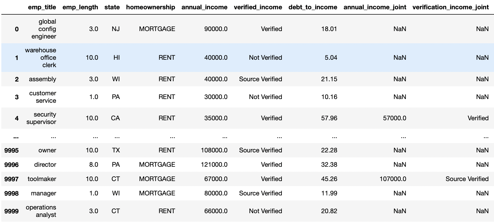
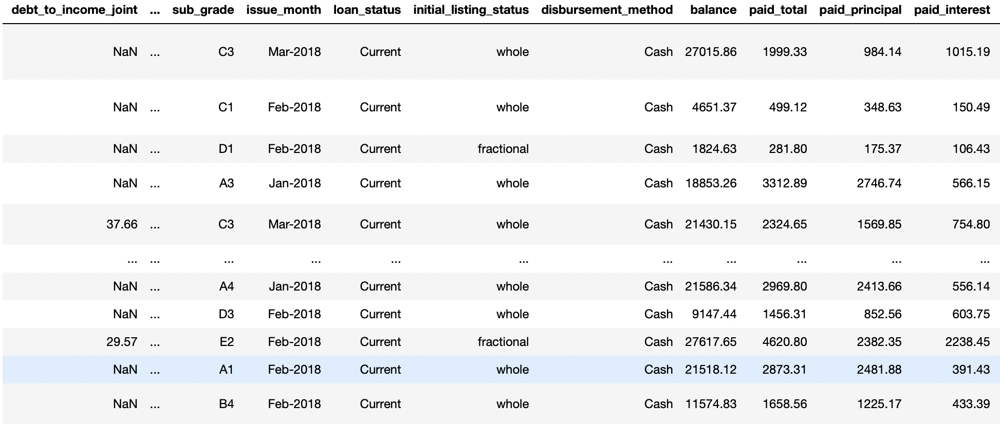
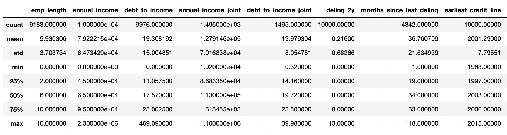
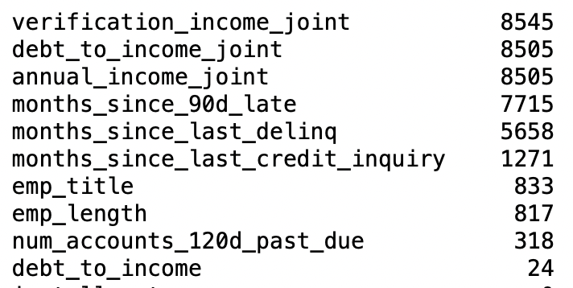
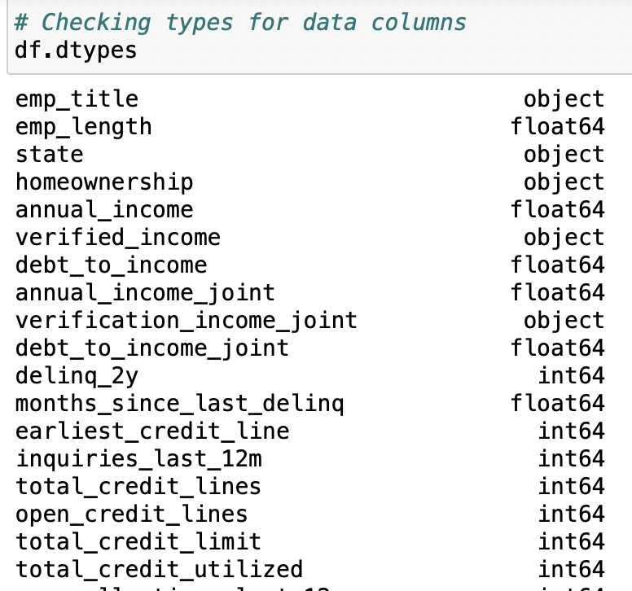
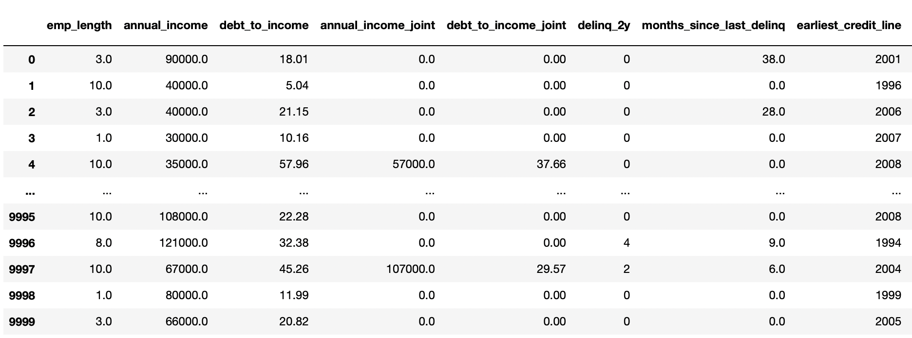

Data Preprocessing:
First, let us see a glimpse of the dataset to understand it better.


- We observe that there are 10,000 data points with 55 columns
- We have the loaner's employee title, employment period, income, application type and other data points
- We also have their credit history such as Delinquencies, Inquiries, derogatory public records etc
- Details on their loan application such as loan purpose, term, interest rate, grade, balance, etc are also available
Next, we can see use describe function to inspect the data

We check the dataset for null values

- We observe that these columns have null values in the dataset
- Upon checking the data description, we see that they are columns which have values if there is a join applicant on the application
- We also see null values for late fees and delinquencies which may not be applicable to everyone
- We then fill these values with 0 so that these columns can be used
We check the dataset for types of column values

- We observe that some columns have object type which means they contain categorical variables
- To include these data in our task, we need to perform get dummies operation on them
- We see the processed dataset ready for our model prediction below:
